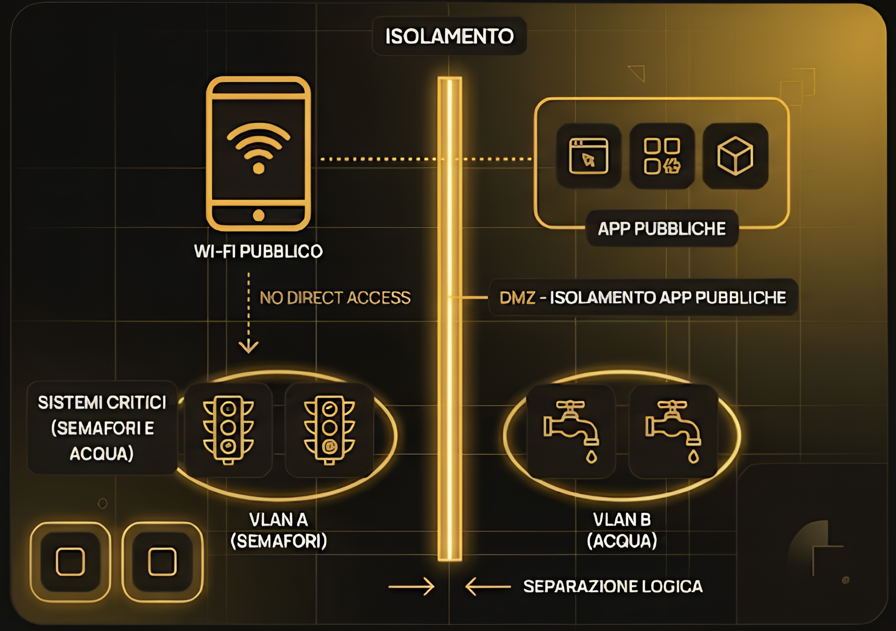

Il Paradosso della Smart City
Una Smart City è un ecosistema iper-connesso di sensori e servizi. Tuttavia, questa interconnessione genera una vulnerabilità strutturale: ogni lampione intelligente o sensore idrico è un potenziale punto di ingresso per un hacker.
Nel Settembre 2024, un attacco a Transport for London ha paralizzato i pagamenti per settimane. Ancor più inquietante il caso di Oldsmar in Florida, dove un hacker ha tentato di avvelenare l'acqua potabile alterando i livelli di soda caustica nel software di controllo.

1. Sicurezza e Triade CIA
La sicurezza delle reti garantisce i target dell'Obiettivo 11 attraverso l'applicazione della Triade CIA:
Essenziale per i trasporti. Un attacco DDoS potrebbe bloccare i semafori o i mezzi di soccorso, rendendo la città insicura.
Assicura che i comandi ai sistemi idrici non siano alterati, evitando contaminazioni chimiche accidentali o dolose.
Protegge i dati sensibili dei cittadini (spostamenti e pagamenti) tramite protocolli di crittografia avanzata.
2. Progetti e Azioni di Difesa
Le amministrazioni moderne adottano strategie proattive per proteggere il perimetro urbano:
Cifratura dei dati alla sorgente (Edge) prima dell'invio ai centri di controllo.
Security Operations Center dedicati al monitoraggio dei flussi di traffico cittadino in tempo reale.
Ridondanza delle infrastrutture per garantire servizi essenziali anche in caso di attacco parziale.
3. Difesa Perimetrale
La soluzione tecnica si basa sulla segregazione logica degli ambienti:
Segmentazione tramite VLAN
Utilizziamo le VLAN per separare fisicamente il traffico del Wi-Fi pubblico da quello dei semafori o degli acquedotti, impedendo il movimento laterale di un malware.
Implementazione DMZ
I servizi web (es. App Parcheggi) risiedono in una DMZ, un'area cuscinetto isolata dal database centrale del Comune tramite firewall.
Modello AAA
Accesso blindato tramite Authentication (MFA), Authorization (privilegio minimo) e Accounting (log immutabili per garantire il non ripudio).

Smart City SOC Simulator
Attiva la DMZ e le VLAN per bloccare il movimento laterale dell'hacker verso l'acquedotto.